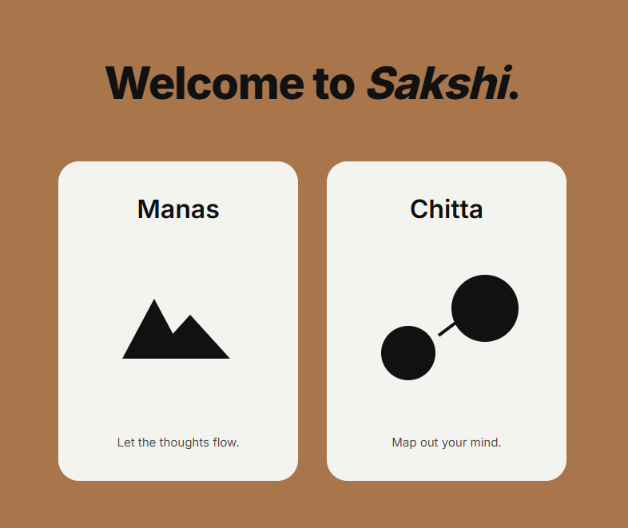

Sakshi
“Write what is true for you right now.”
This is my take on AI functioning as a mirror. Sakshi is a journaling app that surfaces structural patterns and tendencies in your journals, voice memos, academic work, and even case studies. It is designed to help you see yourself more clearly, not to tell you what to think or feel. Sakshi is also inspired by the Advaita Vedanta idea that the world is a reflection of the self. Essentially, the AI’s analysis is intended to be a mirror that surfaces your own consciousness back to you, helping you to see yourself more clearly.
View live →